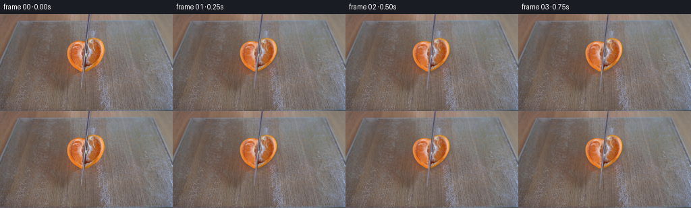
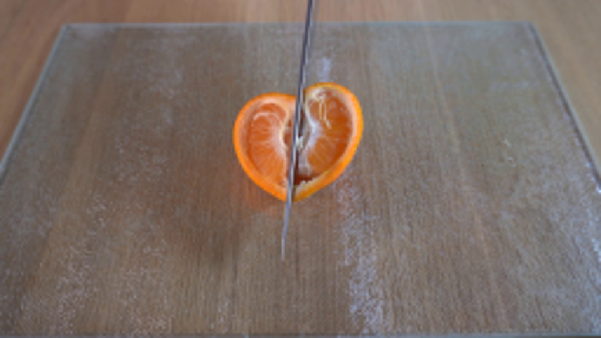
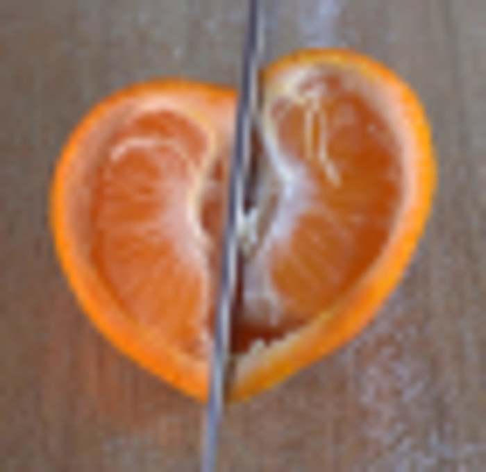
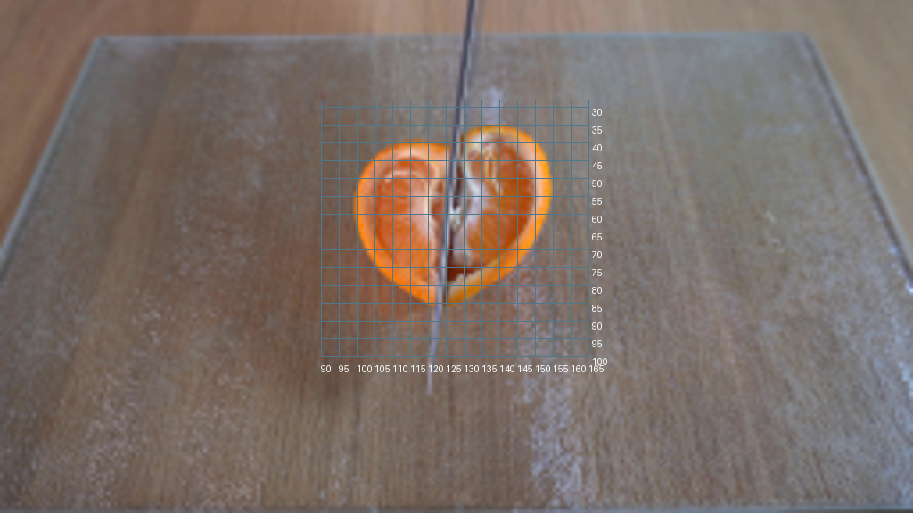
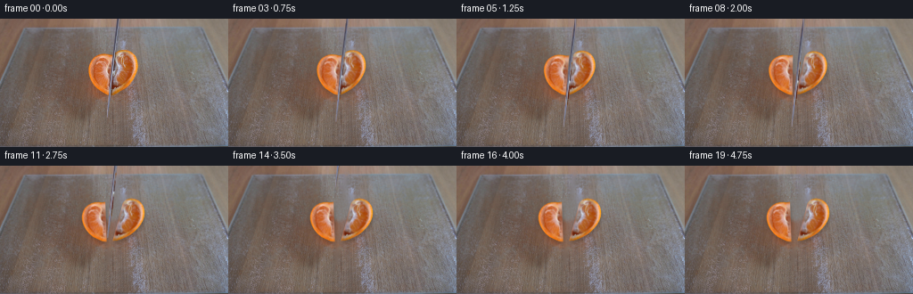
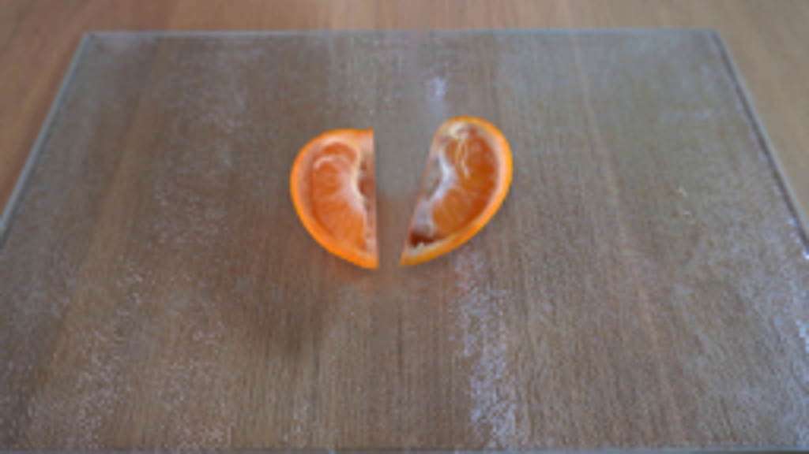
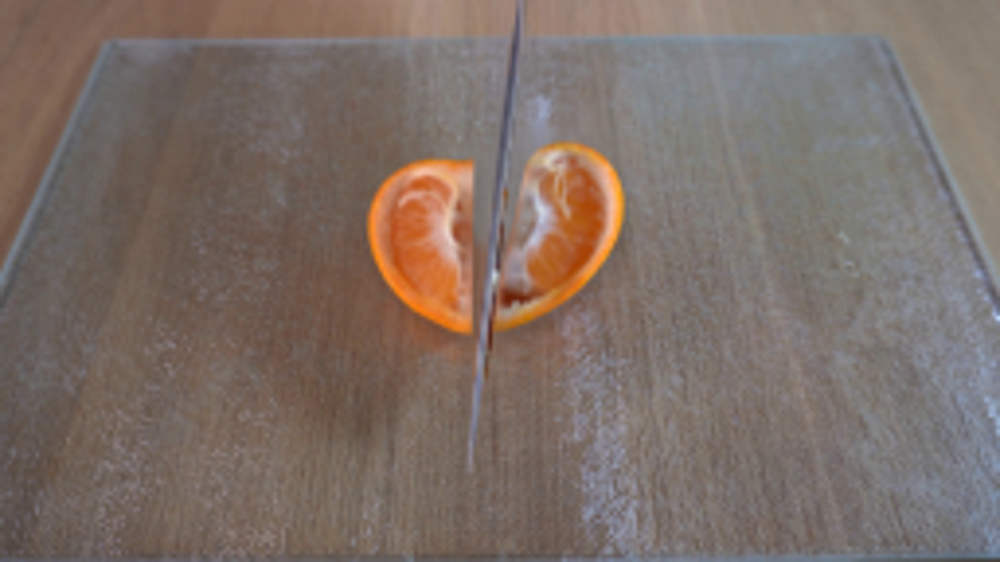
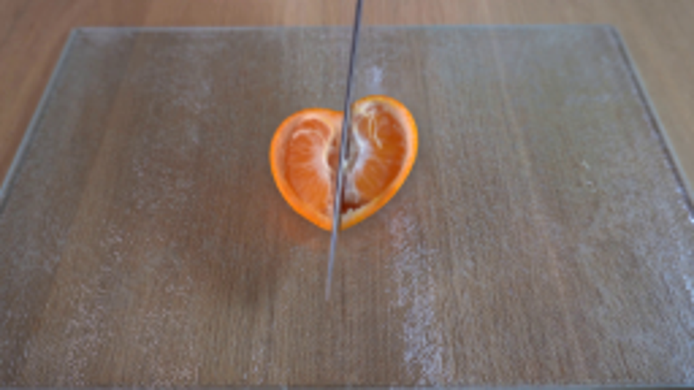

CODING AGENTS AS PIXEL WORLD MODELS
traex/GPT-6.1-Sol · 0041
点击播放 · 原生 RGB 像素
逐轮保存的候选
回放视频、检查图与代码变化。
每份候选均可单独播放。实际图片检查记录在下方工具轨迹中。
候选 01播放与检查图
点击播放 · 原生 RGB 像素


展开代码变化
--- 上一保存版本
+++ 本次保存版本
@@ -0,0 +1,129 @@
+from pathlib import Path
+import numpy as np
+import cv2
+from PIL import Image, ImageDraw
+from scipy.ndimage import gaussian_filter, distance_transform_edt
+import artifact_io
+
+ROOT=Path(__file__).resolve().parent
+S=4
+H,W=144,256
+
+def smooth(a,b,t):
+ q=np.clip((t-a)/(b-a),0,1)
+ return q*q*(3-2*q)
+
+def polygon(points):
+ out=Image.new('L',(W*S,H*S),0)
+ ImageDraw.Draw(out).polygon([(round(x*S),round(y*S)) for x,y in points],fill=255)
+ return np.asarray(out).astype(np.float32)/255
+
+def create():
+ orig=np.asarray(Image.open(ROOT/'first_frame.png').convert('RGB'))
+ f=orig.astype(np.float32)
+ yy,xx=np.mgrid[:H,:W].astype(np.float32)
+ Y,X=np.mgrid[:H*S,:W*S].astype(np.float32)/S
+ # The outline of the fruit already in the reference; only its own photographed texture is used.
+ contour=[(128.6,40.4),(131.0,37.6),(133.9,35.7),(137.6,34.7),(141.8,34.9),
+ (145.2,36.0),(148.2,38.0),(151.1,41.2),(153.0,45.1),(154.0,49.2),
+ (154.0,53.4),(152.9,58.4),(151.0,63.2),(148.3,67.8),(145.2,71.8),
+ (141.6,75.4),(137.0,78.9),(132.0,82.0),(127.0,84.4),(122.4,85.5),
+ (118.2,83.9),(113.4,81.0),(109.0,78.0),(105.3,73.8),(102.2,69.0),
+ (100.3,63.5),(99.2,58.1),(99.6,53.0),(101.4,48.1),(104.3,44.5),
+ (108.2,41.7),(112.4,40.0),(116.4,39.5),(120.8,39.9),(124.8,40.9)]
+ fruitmask=gaussian_filter(polygon(contour),.9)
+ small=cv2.resize(fruitmask,(W,H),interpolation=cv2.INTER_AREA)
+ # Photographed board restored underneath, using adjacent board grain, not a flat painted plate.
+ bmask=(small>.03).astype(np.uint8)
+ bmask=cv2.dilate(bmask,np.ones((7,7),np.uint8))
+ knife_x=132.9-.115*yy
+ kmask=((np.abs(xx-knife_x)<2.7)&(yy<111)).astype(np.uint8)
+ base=cv2.inpaint(orig,kmask*255,3,cv2.INPAINT_TELEA).astype(np.float32)
+ inpaint=cv2.inpaint(base.astype(np.uint8),bmask*255,5,cv2.INPAINT_TELEA).astype(np.float32)
+ # High frequency texture of the same glass surface avoids a blurry inpainted region.
+ left=base[:,np.clip(np.arange(W)-43,0,W-1)]
+ right=base[:,np.clip(np.arange(W)+40,0,W-1)]
+ mix=np.clip((xx-110)/32,0,1)[...,None]
+ adjacent=left*(1-mix)+right*mix
+ detail=adjacent-gaussian_filter(adjacent,(2.1,2.1,0))
+ inpaint+=detail*.8
+ # softly blend just the small removed orange contact shadow at the edge
+ core=distance_transform_edt(bmask)
+ blend=np.clip(core/2.5,0,1)[...,None]
+ background=base*(1-blend)+np.clip(inpaint,0,255)*blend
+
+ # Repair only the pixels hidden by the thin knife within the fruit photograph.
+ fruitfix=cv2.inpaint(orig,kmask*255,2,cv2.INPAINT_TELEA).astype(np.float32)
+ src=cv2.resize(fruitfix,(W*S,H*S),interpolation=cv2.INTER_CUBIC)
+ back=cv2.resize(background,(W*S,H*S),interpolation=cv2.INTER_CUBIC)
+ cut=132.9-.115*Y
+ leftmask=fruitmask*np.clip((cut-X)*S+.5,0,1)
+ rightmask=fruitmask-leftmask
+ # Narrow blade, edge-on as in the given frame, including its real metal reflection.
+ blade=polygon([(131.25,-5),(134.35,-5),(131.3,27),(128.2,55),
+ (125.6,80),(123.0,99),(120.7,110.4),(119.7,110.4),
+ (120.9,94),(123.0,72),(125.4,50),(128.3,24)])
+ blade=gaussian_filter(blade,.75)
+ photo=cv2.resize(f,(W*S,H*S),interpolation=cv2.INTER_CUBIC)
+ # Clip the blade texture to its actual slender steel profile.
+ for y in range(H*S):
+ cy=y/S
+ center=132.9-.115*cy
+ ix=int(round(center*S))
+ # Replicate nearest original blade samples into its soft antialiased edges.
+ lo=max(0,ix-6);hi=min(W*S,ix+7)
+ if cy>110.5: continue
+ frames=[orig.copy()]
+ for k in range(1,20):
+ t=k/4
+ press=smooth(.1,1.65,t)
+ split=smooth(.65,2.8,t)
+ settle=smooth(2.55,3.4,t)
+ lift=smooth(1.8,4.25,t)
+ dy=13.2*press-128*lift
+ dx=.5*np.sin(t*2.8)*(1-lift)
+ img=back.copy()
+ # Faint low contact shadows move with the two substantial pieces.
+ for sign,cx,cy,mask in [(-1,112.7,63.1,leftmask),(1,139.1,59.8,rightmask)]:
+ angle=sign*8.5*split
+ transx=sign*(6.7*split)
+ transy=1.6*split+.65*press*(1-split)
+ # Pillow coordinates: clockwise rotations in image space.
+ a=np.deg2rad(angle)
+ co,si=np.cos(a),np.sin(a)
+ mat=np.array([[co,-si,(cx-cx*co+cy*si+transx)*S],
+ [si,co,(cy-cx*si-cy*co+transy)*S]],np.float32)
+ alpha=cv2.warpAffine(mask,mat,(W*S,H*S),flags=cv2.INTER_LINEAR)
+ texture=cv2.warpAffine(src,mat,(W*S,H*S),flags=cv2.INTER_CUBIC,borderMode=cv2.BORDER_REFLECT)
+ shmat=mat.copy(); shmat[0,2]+=1*S;shmat[1,2]+=3*S
+ shadow=cv2.warpAffine(mask,shmat,(W*S,H*S),flags=cv2.INTER_LINEAR)
+ shadow=gaussian_filter(shadow,2.2*S)*.18
+ img*=1-shadow[...,None]
+ # Small thickness along the freshly cut center edges, below the moist surface.
+ edge=np.clip(gaussian_filter(alpha,.6*S)-alpha,0,1)
+ # Keep the rim's photographic orange and pith texture rather than drawing new segments.
+ img=img*(1-alpha[...,None])+texture*alpha[...,None]
+ # Blade stroke and removal; new exposed pixels come from the same board.
+ sy=((Y-dy)*S).astype(np.float32)
+ sx=((X-dx)*S).astype(np.float32)
+ bm=cv2.remap(blade,sx,sy,cv2.INTER_LINEAR,borderMode=cv2.BORDER_CONSTANT)
+ bc=cv2.remap(photo,sx,sy,cv2.INTER_CUBIC,borderMode=cv2.BORDER_REPLICATE)
+ # Extend only the top of the entering knife, not the blade tip.
+ if dy>0:
+ newtop=(Y<dy).astype(np.float32)
+ bw=np.clip((1.5-np.abs(X-(132.9+dx-.115*(Y-dy))))*S,0,1)*newtop
+ bm=np.maximum(bm,bw)
+ row=cv2.remap(photo,sx,np.zeros_like(sy),cv2.INTER_LINEAR,borderMode=cv2.BORDER_REPLICATE)
+ bc=bc*(1-newtop[...,None])+row*newtop[...,None]
+ img=img*(1-bm[...,None])+bc*bm[...,None]
+ out=cv2.resize(np.clip(img,0,255),(W,H),interpolation=cv2.INTER_AREA)
+ # Preserve the locked camera and every untouched background pixel precisely.
+ affected=cv2.resize((np.max(np.abs(img-back),axis=2)>0.01).astype(np.float32),(W,H),interpolation=cv2.INTER_AREA)>0
+ region=(bmask>0)|(kmask>0)|affected
+ out[~region]=orig[~region]
+ frames.append(np.round(np.clip(out,0,255)).astype(np.uint8))
+ return np.stack(frames)
+
+if __name__=='__main__':
+ frames=create()
+ artifact_io.save(frames,ROOT)
候选 02播放与检查图
点击播放 · 原生 RGB 像素

展开代码变化
--- 上一保存版本
+++ 本次保存版本
@@ -65,20 +65,26 @@
(120.9,94),(123.0,72),(125.4,50),(128.3,24)])
blade=gaussian_filter(blade,.75)
photo=cv2.resize(f,(W*S,H*S),interpolation=cv2.INTER_CUBIC)
- # Clip the blade texture to its actual slender steel profile.
- for y in range(H*S):
- cy=y/S
- center=132.9-.115*cy
- ix=int(round(center*S))
- # Replicate nearest original blade samples into its soft antialiased edges.
- lo=max(0,ix-6);hi=min(W*S,ix+7)
- if cy>110.5: continue
+ # Separate the two metal facets from fruit-color contamination along the blade.
+ for row in range(111*S):
+ cy=row/S
+ ix=int(round(132.15-.115*cy))
+ c=f[min(H-1,int(cy)),ix].copy()
+ if c[0]-c[2]>4:
+ c=np.array([119,119,137],np.float32)
+ c=.55*c+.45*np.array([113,113,131],np.float32)
+ center=132.2-.115*cy
+ side=np.clip((np.arange(W*S)/S-center+.65)/1.7,0,1)
+ shade=-20+48*side
+ steel=np.clip(c[None,:]+shade[:,None],0,255)
+ # Retain mostly the real blade in clear portions, add neutral metallic shading at the fruit.
+ if 33<cy<89:
+ photo[row]=steel
frames=[orig.copy()]
for k in range(1,20):
t=k/4
press=smooth(.1,1.65,t)
split=smooth(.65,2.8,t)
- settle=smooth(2.55,3.4,t)
lift=smooth(1.8,4.25,t)
dy=13.2*press-128*lift
dx=.5*np.sin(t*2.8)*(1-lift)
@@ -99,8 +105,6 @@
shadow=cv2.warpAffine(mask,shmat,(W*S,H*S),flags=cv2.INTER_LINEAR)
shadow=gaussian_filter(shadow,2.2*S)*.18
img*=1-shadow[...,None]
- # Small thickness along the freshly cut center edges, below the moist surface.
- edge=np.clip(gaussian_filter(alpha,.6*S)-alpha,0,1)
# Keep the rim's photographic orange and pith texture rather than drawing new segments.
img=img*(1-alpha[...,None])+texture*alpha[...,None]
# Blade stroke and removal; new exposed pixels come from the same board.
候选 03播放与检查图
可观测工具轨迹
实际执行的命令与返回图片。
命令 1exit 0
/bin/bash -lc "ls -la && cat prompt.txt && printf '\\n--- RULES ---\\n' && cat GENERATION_RULES.md"
命令 2exit 0
/bin/bash -lc "cat artifact_io.py && python - <<'PY'
from PIL import Image
im=Image.open('first_frame.png'); print(im.size); im.resize((1024,576)).save('.tmp/enlarged.png')
PY"命令 3exit 0
/bin/bash -lc "python - <<'PY' import importlib.util for x in ['cv2','scipy','PIL','numpy']: print(x, bool(importlib.util.find_spec(x))) PY"
命令 4exit 0
/bin/bash -lc "python - <<'PY'
from PIL import Image
im=Image.open('first_frame.png'); im.crop((92,28,162,96)).resize((700,680)).save('.tmp/fruit.png')
PY"命令 5exit 0
/bin/bash -lc "python - <<'PY'
from PIL import Image,ImageDraw
im=Image.open('first_frame.png').resize((1024,576))
d=ImageDraw.Draw(im)
for x in range(90,166,5):
d.line((x*4,28*4,x*4,100*4),fill=(80,120,140),width=1);d.text((x*4,102*4),str(x),fill='white')
for y in range(30,101,5):
d.line((90*4,y*4,165*4,y*4),fill=(80,120,140),width=1);d.text((166*4,y*4),str(y),fill='white')
im.save('.tmp/grid.png')
PY"命令 6exit 0
/bin/bash -lc "python - <<'PY'
from PIL import Image
import numpy as np
im=np.array(Image.open('first_frame.png'))
for y in (0,20,35,50,70,85,95,105,111):
print(y,[(x,tuple(im[y,x])) for x in range(round(133-.11*y)-3,round(133-.11*y)+5)])
PY"命令 7exit 0
/bin/bash -lc "cat > .tmp/test_masks.py <<'PY'
import cv2,numpy as np
from PIL import Image
im=np.array(Image.open('first_frame.png'))
y,x=np.mgrid[:144,:256]
mask=((im[:,:,0].astype(float)-im[:,:,2]>43)&(im[:,:,0].astype(float)-im[:,:,1]>27)&(x>97)&(x<157)&(y>31)&(y<90)).astype('uint8')*255
n,l,s,c=cv2.connectedComponentsWithStats(mask)
mask=(l==1).astype('uint8')*255 if n==2 else mask
mask=cv2.morphologyEx(mask,cv2.MORPH_CLOSE,np.ones((5,5),np.uint8))
ct,_=cv2.findContours(mask,cv2.RETR_EXTERNAL,cv2.CHAIN_APPROX_SIMPLE)
cv2.drawContours(mask,ct,-1,255,-1)
cv2.imwrite('.tmp/mask.png',mask)
out=im.copy();out[mask>0]=(out[mask>0]*.4+np.array([40,250,60])*.6).astype('uint8')
Image.fromarray(out).resize((1024,576)).save('.tmp/mask_view.png')
print([c.tolist() for c in ct])
PY
python .tmp/test_masks.py"命令 8exit 1
/bin/bash -lc "cat > generate.py <<'PY'
from pathlib import Path
import numpy as np
import cv2
from PIL import Image, ImageDraw
from scipy.ndimage import gaussian_filter, distance_transform_edt
import artifact_io
ROOT=Path(__file__).resolve().parent
S=4
H,W=144,256
def smooth(a,b,t):
q=np.clip((t-a)/(b-a),0,1)
return q*q*(3-2*q)
def polygon(points):
out=Image.new('L',(W*S,H*S),0)
ImageDraw.Draw(out).polygon([(round(x*S),round(y*S)) for x,y in points],fill=255)
return np.asarray(out).astype(np.float32)/255
def create():
orig=np.asarray(Image.open(ROOT/'first_frame.png').convert('RGB'))
f=orig.astype(np.float32)
yy,xx=np.mgrid[:H,:W].astype(np.float32)
Y,X=np.mgrid[:H*S,:W*S].astype(np.float32)/S
# The outline of the fruit already in the reference; only its own photographed texture is used.
contour=[(128.6,40.4),(131.0,37.6),(133.9,35.7),(137.6,34.7),(141.8,34.9),
(145.2,36.0),(148.2,38.0),(151.1,41.2),(153.0,45.1),(154.0,49.2),
(154.0,53.4),(152.9,58.4),(151.0,63.2),(148.3,67.8),(145.2,71.8),
(141.6,75.4),(137.0,78.9),(132.0,82.0),(127.0,84.4),(122.4,85.5),
(118.2,83.9),(113.4,81.0),(109.0,78.0),(105.3,73.8),(102.2,69.0),
(100.3,63.5),(99.2,58.1),(99.6,53.0),(101.4,48.1),(104.3,44.5),
(108.2,41.7),(112.4,40.0),(116.4,39.5),(120.8,39.9),(124.8,40.9)]
fruitmask=gaussian_filter(polygon(contour),.9)
small=cv2.resize(fruitmask,(W,H),interpolation=cv2.INTER_AREA)
# Photographed board restored underneath, using adjacent board grain, not a flat painted plate.
bmask=(small>.03).astype(np.uint8)
bmask=cv2.dilate(bmask,np.ones((7,7),np.uint8))
knife_x=132.9-.115*yy
kmask=((np.abs(xx-knife_x)<2.7)&(yy<111)).astype(np.uint8)
base=cv2.inpaint(orig,kmask*255,3,cv2.INPAINT_TELEA).astype(np.float32)
inpaint=cv2.inpaint(base.astype(np.uint8),bmask*255,5,cv2.INPAINT_TELEA).astype(np.float32)
# High frequency texture of the same glass surface avoids a blurry inpainted region.
left=base[:,np.clip(np.arange(W)-43,0,W-1)]
right=base[:,np.clip(np.arange(W)+40,0,W-1)]
mix=np.clip((xx-110)/32,0,1)[...,None]
adjacent=left*(1-mix)+right*mix
detail=adjacent-gaussian_filter(adjacent,(2.1,2.1,0))
inpaint+=detail*.8
# softly blend just the small removed orange contact shadow at the edge
core=distance_transform_edt(bmask)
blend=np.clip(core/2.5,0,1)[...,None]
background=base*(1-blend)+np.clip(inpaint,0,255)*blend
# Repair only the pixels hidden by the thin knife within the fruit photograph.
fruitfix=cv2.inpaint(orig,kmask*255,2,cv2.INPAINT_TELEA).astype(np.float32)
src=cv2.resize(fruitfix,(W*S,H*S),interpolation=cv2.INTER_CUBIC)
back=cv2.resize(background,(W*S,H*S),interpolation=cv2.INTER_CUBIC)
cut=132.9-.115*Y
leftmask=fruitmask*np.clip((cut-X)*S+.5,0,1)
rightmask=fruitmask-leftmask
# Narrow blade, edge-on as in the given frame, including its real metal reflection.
blade=polygon([(131.25,-5),(134.35,-5),(131.3,27),(128.2,55),
(125.6,80),(123.0,99),(120.7,110.4),(119.7,110.4),
(120.9,94),(123.0,72),(125.4,50),(128.3,24)])
blade=gaussian_filter(blade,.75)
photo=cv2.resize(f,(W*S,H*S),interpolation=cv2.INTER_CUBIC)
# Clip the blade texture to its actual slender steel profile.
for y in range(H*S):
cy=y/S
center=132.9-.115*cy
ix=int(round(center*S))
# Replicate nearest original blade samples into its soft antialiased edges.
lo=max(0,ix-6);hi=min(W*S,ix+7)
if cy>110.5: continue
frames=[orig.copy()]
for k in range(1,20):
t=k/4
press=smooth(.1,1.65,t)
split=smooth(.65,2.8,t)
settle=smooth(2.55,3.4,t)
lift=smooth(1.8,4.25,t)
dy=13.2*press-128*lift
dx=.5*np.sin(t*2.8)*(1-lift)
img=back.copy()
# Faint low contact shadows move with the two substantial pieces.
for sign,cx,cy,mask in [(-1,112.7,63.1,leftmask),(1,139.1,59.8,rightmask)]:
angle=sign*8.5*split
transx=sign*(6.7*split)
transy=1.6*split+.65*press*(1-split)
# Pillow coordinates: clockwise rotations in image space.
a=np.deg2rad(angle)
co,si=np.cos(a),np.sin(a)
mat=np.array([[co,-si,(cx-cx*co+cy*si+transx)*S],
[si,co,(cy-cx*si-cy*co+transy)*S]],np.float32)
alpha=cv2.warpAffine(mask,mat,(W*S,H*S),flags=cv2.INTER_LINEAR)
texture=cv2.warpAffine(src,mat,(W*S,H*S),flags=cv2.INTER_CUBIC,borderMode=cv2.BORDER_REFLECT)
shmat=mat.copy(); shmat[0,2]+=1*S;shmat[1,2]+=3*S
shadow=cv2.warpAffine(mask,shmat,(W*S,H*S),flags=cv2.INTER_LINEAR)
shadow=gaussian_filter(shadow,2.2*S)*.18
img*=1-shadow[...,None]
# Small thickness along the freshly cut center edges, below the moist surface.
edge=np.clip(gaussian_filter(alpha,.6*S)-alpha,0,1)
# Keep the rim's photographic orange and pith texture rather than drawing new segments.
img=img*(1-alpha[...,None])+texture*alpha[...,None]
# Blade stroke and removal; new exposed pixels come from the same board.
sy=(Y-dy)*S
sx=(X-dx)*S
bm=cv2.remap(blade,sx,sy,cv2.INTER_LINEAR,borderMode=cv2.BORDER_CONSTANT)
bc=cv2.remap(photo,sx,sy,cv2.INTER_CUBIC,borderMode=cv2.BORDER_REPLICATE)
# Extend only the top of the entering knife, not the blade tip.
if dy>0:
newtop=(Y<dy).astype(np.float32)
bw=np.clip((1.5-np.abs(X-(132.9+dx-.115*(Y-dy))))*S,0,1)*newtop
bm=np.maximum(bm,bw)
row=cv2.remap(photo,sx,np.zeros_like(sy),cv2.INTER_LINEAR,borderMode=cv2.BORDER_REPLICATE)
bc=bc*(1-newtop[...,None])+row*newtop[...,None]
img=img*(1-bm[...,None])+bc*bm[...,None]
out=cv2.resize(np.clip(img,0,255),(W,H),interpolation=cv2.INTER_AREA)
# Preserve the locked camera and every untouched background pixel precisely.
affected=cv2.resize((np.max(np.abs(img-back),axis=2)>0.01).astype(np.float32),(W,H),interpolation=cv2.INTER_AREA)>0
region=(bmask>0)|(kmask>0)|affected
out[~region]=orig[~region]
frames.append(np.round(np.clip(out,0,255)).astype(np.uint8))
return np.stack(frames)
if __name__=='__main__':
frames=create()
artifact_io.save(frames,ROOT)
PY
python generate.py"命令 9exit 0
/bin/bash -lc "python - <<'PY'
p='generate.py'
s=open(p).read().replace('sy=(Y-dy)*S\\n sx=(X-dx)*S','sy=((Y-dy)*S).astype(np.float32)\\n sx=((X-dx)*S).astype(np.float32)')
open(p,'w').write(s)
PY
python generate.py"命令 10exit 0
/bin/bash -lc "python - <<'PY'
from PIL import Image
for k in [1,8,19]:
Image.open(f'frames/{k:02d}.png').resize((1024,576)).save(f'.tmp/out{k}.png')
PY"命令 11exit 0
/bin/bash -lc "python - <<'PY'
p='generate.py'
s=open(p).read()
a=s.index(' # Clip the blade texture')
b=s.index(' frames=[orig.copy()]',a)
s=s[:a]+''' # Separate the two metal facets from fruit-color contamination along the blade.
for row in range(111*S):
cy=row/S
ix=int(round(132.15-.115*cy))
c=f[min(H-1,int(cy)),ix].copy()
if c[0]-c[2]>4:
c=np.array([119,119,137],np.float32)
c=.55*c+.45*np.array([113,113,131],np.float32)
center=132.2-.115*cy
side=np.clip((np.arange(W*S)/S-center+.65)/1.7,0,1)
shade=-20+48*side
steel=np.clip(c[None,:]+shade[:,None],0,255)
# Retain mostly the real blade in clear portions, add neutral metallic shading at the fruit.
if 33<cy<89:
photo[row]=steel
''' +s[b:]
s=s.replace(' settle=smooth(2.55,3.4,t)\\n','')
s=s.replace(' transy=1.6*split+.65*press*(1-split)',' transy=1.6*split+.65*press*(1-split)')
s=s.replace(' # Small thickness along the freshly cut center edges, below the moist surface.\\n edge=np.clip(gaussian_filter(alpha,.6*S)-alpha,0,1)\\n','')
open(p,'w').write(s)
PY
python generate.py
python - <<'PY'
import numpy as np
from PIL import Image
p=np.load('pixels.npz')['pixels']
a=np.array(Image.open('first_frame.png'))
b=p[:,:,0]
assert p.shape==(144,256,20)
assert np.array_equal(a,np.stack([(b>>16)&255,(b>>8)&255,b&255],axis=-1).astype(np.uint8))
print('Validated 20 RGB frames, 256Ã144; frame 00 identical.')
PY"视觉工具实际返回图片 1

视觉工具实际返回图片 2

视觉工具实际返回图片 3

视觉工具实际返回图片 4

视觉工具实际返回图片 5

视觉工具实际返回图片 6

视觉工具实际返回图片 7

保存候选 3 份；完成命令 11 次；可验证图片返回 7 张。原始 API 响应与完整日志保留在本地。